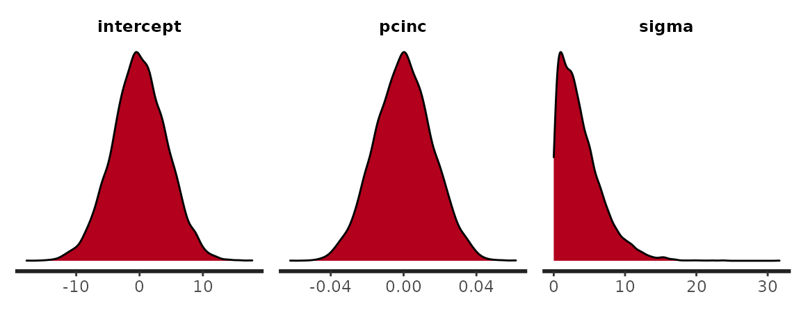
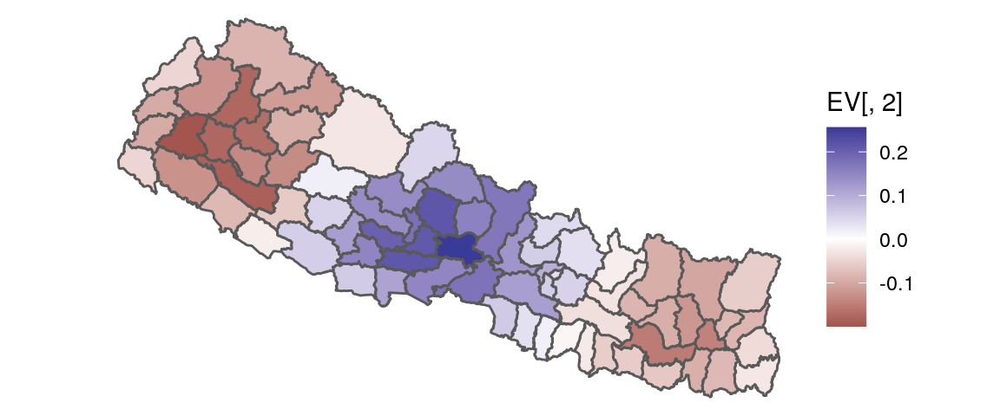
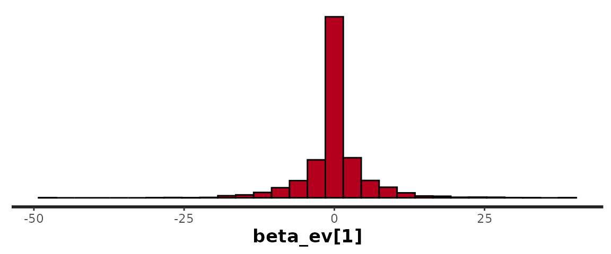
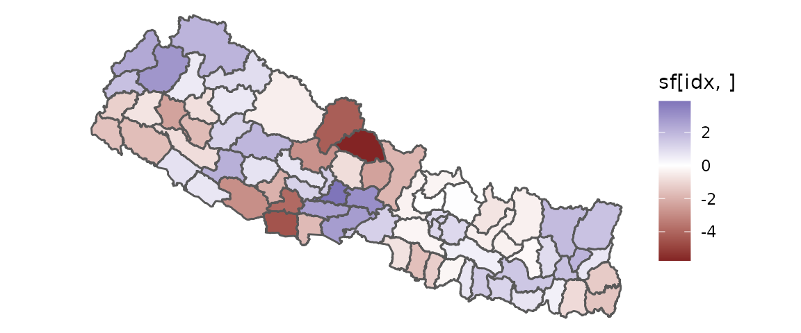
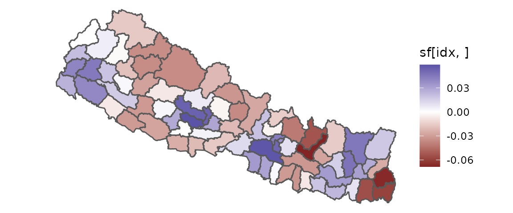

This vignette provides instruction for setting prior distributions for geostan models. While geostan will set priors automatically if you do not provide them, users are encouraged to set priors based on domain-specific knowledge.
Load the geostan, ggplot2, and sf packages:
Given a url to a shapefile, the geostan::get_shp function will download the data and unzip it into your working directory. Download the nepal dataset with information on social indicators for 75 districts of Nepal (hosted by GeoDa):
# saving to a temporary directory
folder <- tempdir()
url <- "https://geodacenter.github.io/data-and-lab//data/nepal.zip"
get_shp(url, folder)
#> [1] "/tmp/RtmpXB3nIN/file5c4416652df65"
#> [2] "/tmp/RtmpXB3nIN/file5c44168a00bef"
#> [3] "/tmp/RtmpXB3nIN/file5c441790014b6.zip"
#> [4] "/tmp/RtmpXB3nIN/file5c441afecd34.so"
#> [5] "/tmp/RtmpXB3nIN/nepal.dbf"
#> [6] "/tmp/RtmpXB3nIN/nepal.prj"
#> [7] "/tmp/RtmpXB3nIN/nepal.shp"
#> [8] "/tmp/RtmpXB3nIN/nepal.shx"
nepal <- st_read(folder, "nepal")
#> Reading layer `nepal' from data source `/tmp/RtmpXB3nIN' using driver `ESRI Shapefile'
#> Simple feature collection with 75 features and 61 fields
#> Geometry type: POLYGON
#> Dimension: XY
#> Bounding box: xmin: 80.06014 ymin: 26.34752 xmax: 88.20401 ymax: 30.44702
#> Geodetic CRS: WGS 84We will reference per-capita income (PCI) pcinc and the percentage of people not expected to survive beyond age 40 lif40 (or “early mortality”). To work with a fixed example, consider a model that hypothesizes premature mortality rates to be a linear function of per-capita income \[\begin{equation}
\text{early_mortality}_i = \alpha + \beta * \text{PCI}_i + e_i
\end{equation}\] with \(e_i\) an error term, and we want to obtain a probability distribution for each of the model’s parameters conditional on the nepal data and background information. Note that the examples here are intended only to provide guidance on how to use particular features in the software, this vignette does not offer guidance on determining what prior parameters are appropriate.
If you don’t provide prior distributions geostan will set them for you and will print them out before fitting the model:
# refresh = 0 suppresses some of the printing from Stan
fit <- stan_glm(lif40 ~ pcinc, data = nepal, prior_only = TRUE, refresh = 0, cores = 1)
#>
#> *Setting prior parameters for intercept
#> Gaussian
#> Location: 0
#> Scale: 4.35003116898847
#>
#> *Setting prior parameters for beta
#> Gaussian
#> Location Scale
#> pcinc 0 0.01586476
#>
#> *Setting prior parameters for sigma
#> Student's t
#> Degrees of freedom: 10
#> Location: 0
#> Scale: 4.35003116898847The intercept and coefficients are assigned Gaussian prior distributions centered on zero with scale parameter equal to \(2 * s_y\) and \(2*\frac{s_y}{s_x}\) respectively (with \(s\) the sample standard deviation; similar to the default priors in the rstanarm package). For models with a Gaussian or Student’s \(t\) likelihood, the scale parameter \(\sigma\) for the outcome is assigned a half-Student’s \(t\) model (truncated to be positive) with scale \(2 * s_y\).
By setting prior_only = TRUE we tell Stan to sample from the prior distributions only, ignoring the likelihood of the data. We can visualize samples from the prior distributions:
plot(fit)
#> `stat_bin()` using `bins = 30`. Pick better value with `binwidth`. We can also extract all the samples from prior distributions as a matrix:
If we use the centerx (or scalex) arguments in stan_glm (or any of the geostan model fitting functions), the covariates will be centered (or scaled) before the priors are calculated, and the default prior for the intercept will be centered on the data mean \(\bar{y}\) rather than zero:
fit.c <- stan_glm(lif40 ~ pcinc, data = nepal, centerx = TRUE, refresh = 0, cores = 1)
#>
#> *Setting prior parameters for intercept
#> Gaussian
#> Location: 8.27733333333333
#> Scale: 4.35003116898847
#>
#> *Setting prior parameters for beta
#> Gaussian
#> Location Scale
#> pcinc 0 0.01586476
#>
#> *Setting prior parameters for sigma
#> Student's t
#> Degrees of freedom: 10
#> Location: 0
#> Scale: 4.35003116898847Centering or scaling data often improves Stan’s sampling speed, sometimes dramatically!
This section shows how to set priors on the intercept, coefficients, scale term \(\sigma\), and other parameters that apply to some or all of the stan_* model fitting functions. The prior models are fixed (i.e. you currently cannot change the prior on the intercept from a Gaussian to Student’s \(t\)) but you can and generally should provide your own values for the parameters.
To set the prior parameters for the intercept provide the values for the location \(\mu\) and scale \(\sigma\) of the Gaussian distribution to the prior_intercept argument. The following code sets the prior for the intercept to a Gaussian distribution with mean 0 and scale 5:
Priors for coefficients need to be provided in a matrix or data frame and passed to the prior argument. Provide two columns—location and scale—and a row for each variable in their order of appearance in the model formula. In this case there is one variable, so if we wish to set its prior to a Gaussian with mean 2 and scale 2 we would use:
fit <- stan_glm(lif40 ~ pcinc, data = nepal, prior = data.frame(location = 2, scale = 2))If we had two covariates and wished to assigned the same prior to all of them the prior argument would then look like prior = data.frame(location = c(2, 2), scale = c(2, 2)).
The scale parameter \(\sigma\) is assigned a half-Student’s \(t\) prior, which is truncated at zero (i.e. only positive values will be assigned non-zero probability). The Student’s \(t\) distribution has three parameters: degrees of freedom, location, and scale. So if we wish to set the prior to Student’s \(t\) with 10 degrees of freedom, location 0, and scale 2, we would provide the following:
Often times the Gaussian model is unsatisfactory because there appear to be ‘outliers’ that may be exerting undue influence on the results. Since the Student’s \(t\) likelihood has heavier tails, such outliers will exert less influence when family = student_t(). The prior for the degrees of freedom for the likelihood is a Gamma distribution and it can be set using the prior_nu argument in stan_glm. The default, for instance, could be set manually like this:
which for reference looks like this:

All of the models have the option to include a varying intercept term. These are similar to adding an indicator or dummy variable for each region, for instance, or any other geographic scale. However, they use hierarchical modeling to partially pool information across observations (often called ‘random effects’ terms, which is misleading). For count data especially, this offers a way to evaluate rates of occurrence while remaining attentive to the instability of rates when denominators are small. Generically, these models assign low probability to ‘extreme’ values, but what is considered ‘extreme’ or implausible is defined by a Gaussian distribution with parameters that are inferred from the data. The varying intercepts \(\alpha_{[j]}\) are deviations from the global intercept, and their prior model is equivalent to: \[
\alpha_{[j]} \sim Gauss(0, \tau_\alpha) \\
\tau_\alpha \sim Student^{+}(\text{degrees of freedom, location, scale})
\] with positively-constrained Student’s \(t\) prior for the scale. If we were to estimate the mean lif40 for each of the 14 regions in the nepal data (found in the name_2 variable), we would use the re argument to specify the regional grouping variable and override the default prior parameters for \(\alpha_\tau\), if desired, using the prior_tau argument:
The only adjustable parameter specific to the CAR model is the prior on the scale parameter. The default is weakly informative. The CAR model is a multivariate Gaussian distribution specified as followings:
\[ Y \sim MVGauss(\mu, (I - \rho C) M) \]
where \(Y\) is a vector of parameters or data to model. With \(M = \Delta \sigma^2\), \(\Delta\) is a diagonal matrix with known positive values on the diagonal that are proportional to the conditional variances of each respective observation (conditional' meaning, 'conditional on knowing the values of the neighboring observations'), and $sigma^2$ is a scale parameter. C is a connectivity matrix and $\rho$ is a spatial dependence parameter, capturing the nature and degree of autocorrelation. Thegeostan::prep_car_data` function provides a convenient method of producing \(M\) and \(C\).
The scale parameter \(\sigma\) is given a half-Student’s t prior (“half” meaning it is constrained to positive values only), requiring parameters for degrees of freedom, location, and scale. The following code sets the prior to 30 degrees of freedom, location 0, and unit scale:
The Intrinsic Conditional Autoregressive (ICAR) models are based on the Stan code developed in Morris et al. (2019). In each of the available model options (type = c("icar", "bym", "bym2")), a parameter vector phi is assigned the ICAR prior (which places high prior probability on smooth spatial trends). The model is fixed, with no priors available to set.
To implement the BYM2 model introduced in Riebler et al. (2016) and implemented in Stan by Morris et al. (2019), you must provide an additional scale_factor term using the INLA package (see here for installation instructions).
The following code chunk demonstrates how to calculate the scale_factor argument given a spatial connectivity matrix C, the geostan::prep_icar_data function, and a user-defined function c_scale (from Morris et al. (2019)):
library(INLA)
#' create scale factor for BYM2 model
#' C must be an N by N connectivity matrix
c_scale <- function(C) {
N <- nrow(C)
adj.matrix <- Matrix::Matrix(C, sparse = TRUE)
Q = Diagonal(N, rowSums(adj.matrix)) - adj.matrix
Q_pert = Q + Diagonal(N) * max(diag(Q)) * sqrt(.Machine$double.eps)
Q_inv = INLA::inla.qinv(Q_pert, constr=list(A = matrix(1,1,N),e=0))
scale_factor <- exp(mean(log(diag(Q_inv))))
return (scale_factor)
}
C <- shape2mat(nepal)
icar.data <- prep_icar_data(C)
k <- icar.data$k
scale_factor <- vector(mode = "numeric", length = k)
for (j in 1:k) {
g.idx <- which(icar.data$comp.id == j)
if (length(g.idx) == 1) {
scale_factor[j] <- 1
next
}
Cg <- C[g.idx, g.idx]
scale.j <- c_scale(Cg)
scale_factor[j] <- scale.j
}The scale_factor is then passed to stan_icar for the BYM2 model, as in:
The eigenvector spatial filter (ESF) models (see geostan::stan_esf) will also set priors automatically for the additional parameters needed to fit the spatial filter, specifically the coefficients beta_ev on the spatial eigenvectors. ESF models attempt to use a linear combination of the eigenvectors from a transformed spatial connectivity matrix to estimate latent spatial autocorrelation patterns. The Nepal model could be updated with a spatial filter as such: \[\begin{equation}
\text{early_mortality}_i = \alpha + EV_i * \beta_{EV} + \text{PCI}_i * \beta_{inc} + e_i
\end{equation}\] Each of the eigenvectors represent patterns of potential spatial autocorrelation. The challenge of ESF models is that they can have a very high number of parameters to estimate (one for each eigenvector) and often only a small number of them are far from zero. The geostan package assigns a regularized horseshoe (RHS) prior model (Piironen and Vehtari (2017)) to the coefficients beta_ev. This concentrates prior probability on zero, aggressively shrinking all of the coefficients to zero; but it also has heavy tails that open up where there is sufficient evidence of a non-zero coefficient, allowing a few parameters to escape the pull toward zero.
Again geostan will print its default priors before sampling from the model:
C <- shape2mat(nepal)
fit.esf <- stan_esf(lif40 ~ pcinc, data = nepal, C = C, centerx = TRUE, prior_only = TRUE, refresh = 0, cores = 1)
#>
#> *Setting prior parameters for intercept
#> Gaussian
#> Location: 8.27733333333333
#> Scale: 4.35003116898847
#>
#> *Setting prior parameters for beta
#> Gaussian
#> Location Scale
#> pcinc 0 0.01586476
#>
#> *Setting prior parameters for sigma
#> Student's t
#> Degrees of freedom: 10
#> Location: 0
#> Scale: 4.35003116898847
#>
#> *Setting prior parameters for rhs
#> Global shrinkage prior (scale_global): 1
#> Slab degrees of freedom: 15
#> Slab scale: 9.35509575935311We can plot samples from the prior distribution:
plot(fit.esf, pars = "beta_ev[1]")
#> `stat_bin()` using `bins = 30`. Pick better value with `binwidth`. We can also draw samples from prior distribution of the spatial filter itself, which is a joint probability over EV * beta_ev, using geostan::spatial::
sf <- spatial(fit.esf, summary = FALSE)The new object sf is an m-by-n matrix, where m is the number of samples drawn from the posterior distribution and n is the number of observations in the data.
dim(sf)
#> [1] 4000 75Thus the ith column contains samples from the marginal (prior) probability distribution for the spatial filter (i.e. spatially varying mean) at the location of the ith observation. This means one can summarize the probability distribution for the spatial filter at the ith observation by manipulating sf column-wise:
# one at a time
mean(sf[,1])
#> [1] 0.01060625
# summarize them all: mean of each column
apply(sf, 2, mean)
#> esf[1] esf[2] esf[3] esf[4] esf[5]
#> 0.0106062468 -0.0585676143 -0.0471154913 0.0341042249 -0.0001138872
#> esf[6] esf[7] esf[8] esf[9] esf[10]
#> 0.0074838183 0.0136648868 0.0112120613 -0.0130083233 0.0369825776
#> esf[11] esf[12] esf[13] esf[14] esf[15]
#> 0.0347514235 0.0586690935 0.0030275274 0.0294317561 0.0124068741
#> esf[16] esf[17] esf[18] esf[19] esf[20]
#> 0.0204314887 -0.0022452081 -0.0203291066 -0.0456008880 -0.0449021459
#> esf[21] esf[22] esf[23] esf[24] esf[25]
#> -0.0367901412 -0.0348694077 0.0046571911 -0.0213042466 0.0085936656
#> esf[26] esf[27] esf[28] esf[29] esf[30]
#> -0.0542070453 0.0602005711 -0.0386176732 0.0807027470 -0.0481919478
#> esf[31] esf[32] esf[33] esf[34] esf[35]
#> -0.0563206950 0.0266081555 0.0771189689 -0.0555904624 -0.0411343268
#> esf[36] esf[37] esf[38] esf[39] esf[40]
#> -0.0205442670 -0.0048773351 -0.0087310271 -0.0510823668 -0.0571385721
#> esf[41] esf[42] esf[43] esf[44] esf[45]
#> -0.0596298415 -0.0288670501 -0.0305788856 -0.0100228353 -0.0265228798
#> esf[46] esf[47] esf[48] esf[49] esf[50]
#> 0.0143079881 -0.0598509187 -0.0459938188 0.0190447158 0.0025956864
#> esf[51] esf[52] esf[53] esf[54] esf[55]
#> -0.0025378317 0.0002073692 -0.0239733401 -0.0299466870 0.0229373875
#> esf[56] esf[57] esf[58] esf[59] esf[60]
#> 0.0177386896 0.0283222947 0.0340410549 0.0135682540 0.0234039449
#> esf[61] esf[62] esf[63] esf[64] esf[65]
#> 0.0135856877 -0.0166121909 0.0144068298 0.0085483454 0.0274162715
#> esf[66] esf[67] esf[68] esf[69] esf[70]
#> 0.0145365369 -0.0398222152 0.0832979764 0.0744993657 -0.0124238265
#> esf[71] esf[72] esf[73] esf[74] esf[75]
#> 0.0206096790 0.0621141609 0.0393855196 0.0731473995 0.0096960642By contrast, each row is a draw from the joint probability distribution of the spatial filter. Each of the coefficients has the same marginal probability as beta_ev[1]. But samples from the joint distribution show that the horseshoe prior assigns high probability to the presence of positive spatial autocorrelation (without favoring any particular pattern). Each of the samples exhibit a different pattern, arising from various linear combinations of eigenvectors:
n.samples <- nrow(sf)
idx <- sample(n.samples, size = 1)
ggplot(nepal) +
geom_sf(aes(fill = sf[idx, ])) +
scale_fill_gradient2() +
theme_void()
idx <- sample(n.samples, size = 1)
ggplot(nepal) +
geom_sf(aes(fill = sf[idx, ])) +
scale_fill_gradient2() +
theme_void() The default priors for geostan::stan_esf are designed to work well for the data provided, but they are not perfect. The best evaluation of the ESF models is to examine the residuals for spatial autocorrelation using geostan::moran_plot or geostan::sp_diag.
The RHS model has three parameters that need to be set. First is a global scale parameter which should reflect our initial information on how sparse the model should be: setting scale_global near zero will impose more sparsity, and moving it towards 1 relaxes the sparsity of the model. If a model shows residual spatial autocorrelation, relaxing the degree of sparsity may help by allowing spatial filter to expand and absorb more of the autocorrelation pattern. Approximating the autocorrelation patterns in data with strong spatial autocorrelation typically requires greater numbers of eigenvectors, and this informs geostan’s default prior settings (based on equations from Chun et al. (2016); see Donegan, Chun, and Hughes (2020)). The remaining parameters to set are the degrees of freedom and scale for a Student’s \(t\) prior which is applied to any of the “large” parameter estimates that escape the shrinkage to zero. One can view the RHS model as a combination of a spike at zero and slabs extending outwards; the Student’s \(t\) model determines the width of the slabs.
The RHS prior parameters can be set by providing a named vector to the prior_rhs argument, with elements scale_global and slab_df and slab_scale (for the Student’s \(t\) slab):
fit <- stan_esf(lif40 ~ pcinc, data = nepal, C = C, prior_rhs = c(scale_global = 0.6, slab_df = 10, slab_scale = 20))For some intuition on the scale of the slab, you have to know the scale of the eigenvectors and the outcome variable. All of the eigenvectors have the same scale, which in this case is:
The default prior for the slab is slab_df = 15 and slab_scale = 0.5 * sd(y) / sd(EV[,1]). The default prior for the scale_global parameter is described in Donegan, Chun, and Hughes (2020).
Chun, Yongwan, Daniel A Griffith, Monghyeon Lee, and Parmanand Sinha. 2016. “Eigenvector Selection with Stepwise Regression Techniques to Construct Eigenvector Spatial Filters.” Journal of Geographical Systems 18 (1): 67–85.
Donegan, Connor, Yongwan Chun, and Amy E Hughes. 2020. “Bayesian Estimation of Spatial Filters with Moran’s Eigenvectors and Hierarchical Shrinkage Priors.” Spatial Statistics, 100450.
Morris, Mitzi, Katherine Wheeler-Martin, Dan Simpson, Stephen J Mooney, Andrew Gelman, and Charles DiMaggio. 2019. “Bayesian Hierarchical Spatial Models: Implementing the Besag York Mollié Model in Stan.” Spatial and Spatio-Temporal Epidemiology 31: 100301. https://mc-stan.org/users/documentation/case-studies/icar_stan.html#bym2-improving-the-parameterization-of-the-besag-york-and-mollie-model.
Piironen, Juho, and Aki Vehtari. 2017. “Sparsity Information and Regularization in the Horseshoe and Other Shrinkage Priors.” Electronic Journal of Statistics 11 (2): 5018–51.
Riebler, Andrea, Sigrunn H Sørbye, Daniel Simpson, and Håvard Rue. 2016. “An Intuitive Bayesian Spatial Model for Disease Mapping That Accounts for Scaling.” Statistical Methods in Medical Research 25 (4): 1145–65.